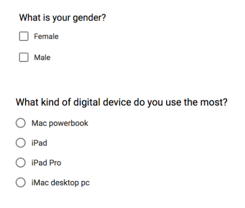
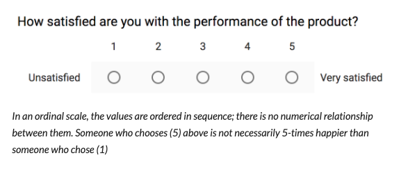
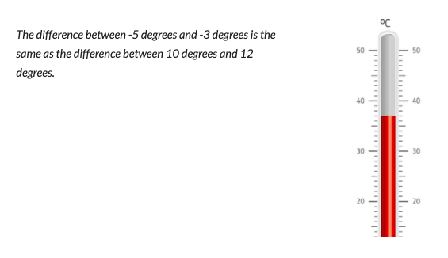
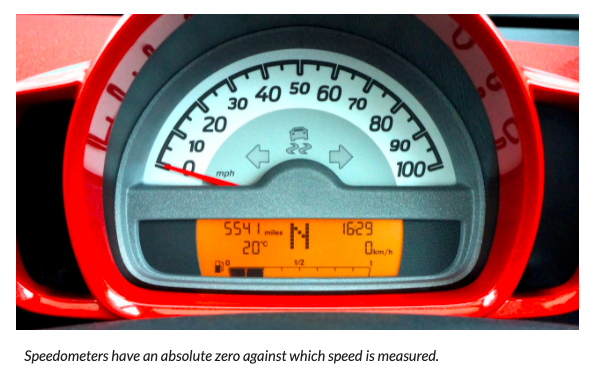
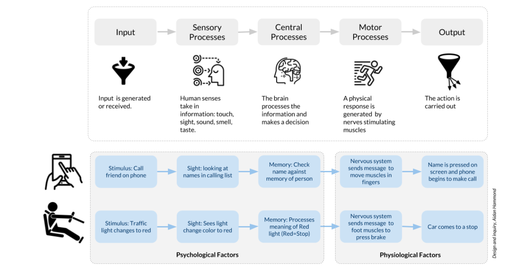

Scales of measurement
The collecting of psychological data involves the study of human behavior and responses. Designers will use a variety of methods to gather psychological data.
Understanding each method, the type of scale it uses, and whether the data gathered is qualitative or quantitative can help designers interpret the significance of the data and how it can be applied to the design context.
Nominal Scale
Nominal scales are used for labelling a variable. Common examples are checkboxes for characteristics such as gender, city, favorite food, etc.. The items in the list have no real numerical value or relationship to one another.
Ordinal Scale
Ordinal scales list items in order of importance or significance. These types of scales usually measure a feeling or perception along a continuum (unhappy to happy; unsatisfied to satisfied). However there is no numerical difference between on value and the next. For example
Interval Scale
Interval scales represent the order of values as well as showing the difference. A Celsius thermometer displays the difference between each unit as the same. i.e.
It is important to remember that Interval scales do not have an absolute zero. In the case of the Celsius thermometer the zero is arbitrarily set to the freezing point of water.
Ratio Scale
Ratio scales are the most comprehensive scales, and in some way are the perfect combination of other Scales: They show the exact difference between units (Interval scales); They show the order of units (Ordinal scales); and they have absolute zero.
Taken together, Ratio scales provide the most comprehensive form of quantitative data for analysis and research.
Collecting Psychological Data
Researchers, and designers, can use a wide variety of methods for collecting data about users, their behavior, and perceptions. Designers should consider what types of research strategies to use in order to gather meaningful, and accurate data.
Interviews involve asking people questions to learn more about their beliefs, experiences, needs, etc.
Surveys consist of a set of questions that are asked to each participant.
Observation involves watching the subject as they engage in a task, work in a space, or try to complete some activity. Observations can take place in the laboratory, place or work, or in a natural environment,.
Standardized tests are designed to measure a user's performance or ability and for the results to be compared to that of other users in the group.
Human Information Processing System (HIPS)
Humans are information processing systems, just as computers are. As designers, we must consider how the human mind processes and acts upon information.
Just as important as understanding how the mind processes information, it understanding how this system can break down. If there is too much stimulus (Input), or if there is no way to process the information, an error, mistake or accident can occur.
Take for example a driver of a car trying to answer a phone. The human brain can only process so much stimulus at a given time: reaching for the ringing phone, driving the car, paying attention to traffic signals, and noticing oncoming cars all place demands on the brain. There is simply too much information to processes quickly and accurately. The brain cannot cope, and something will get missed (not noticing a deer crossing the road?) and an accident will happen.
Many factors can affect how well we process information
Environmental Factors
Users respond to environmental factors and these can affect how they perform. Environmental factors include sound, temperature, lighting, air quality, and smell. Environmental factors can have effects on Comfort, Alertness, and Perception
Designers should understand that environmental factors can affect people in different ways. A room temperature that is comfortable to one person might be too hot or too cold for another. Likewise, a person who is mobile in a given space is going to be warmer than a person who sits at a desk (Think of teachers and students). Studies also show that women typically feel colder than men do, and thus prefer a warmer temperature.
Alertness
Alertness refers to the ability to be focused and awake. Environmental factors will affect our level of alertness in different ways:
Footer